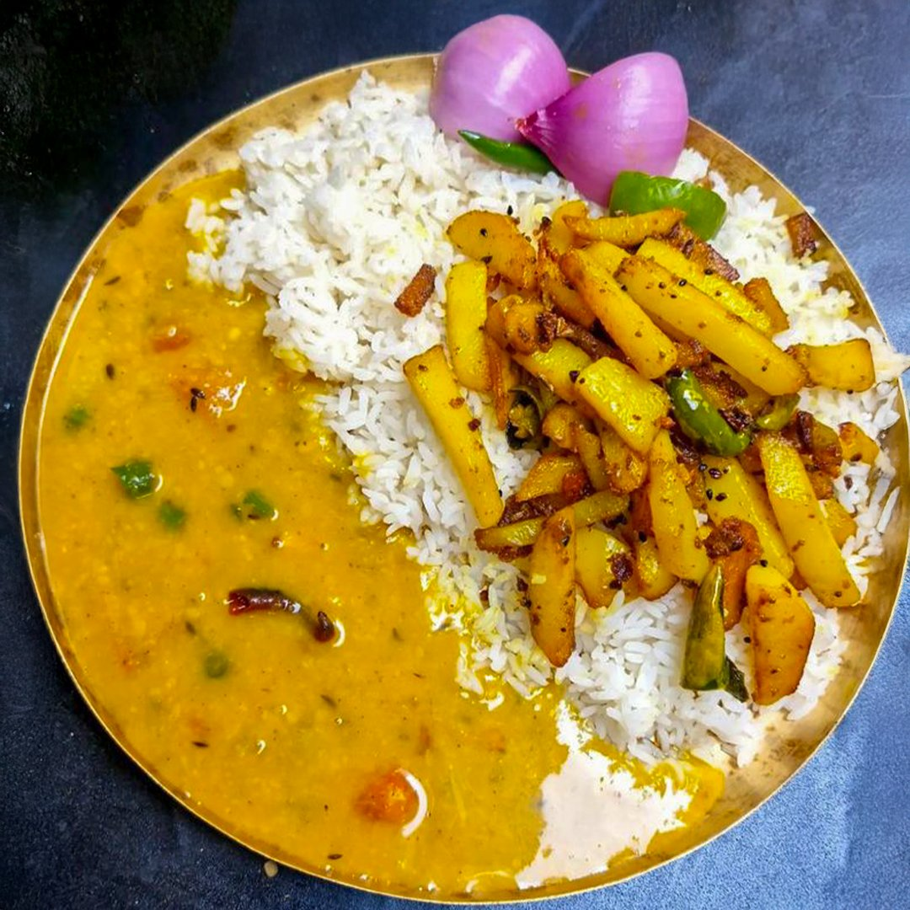

Daal-chawal

The Daal-chawal
It is the staple food in Bihar and specially in
North Bihar and Champaran.
To be honest, it's my favorite meal.
This, I must always try whenever i go home from anywhere at first.
#Ingrediants:
- Raw Basmati Chawal (for best fragrance)
- Different Vaiety of Daal like Chane, Mooong and Arhar
- Jeera to be use in Chawal
- Potato or Aloo for making sabji
# Steps to make My favorite Dish
- Make Chawal in cooker for around 200gm and add water
- Take another cooker and put all three daal variety in that
- Add required amount of water in the daal
- Now put both Pressure cooker on Gas
- Now cut potato in appropriate shapes and make bhujiya sabji
- Now after cooking all three, Enjoy Your Meal
Home